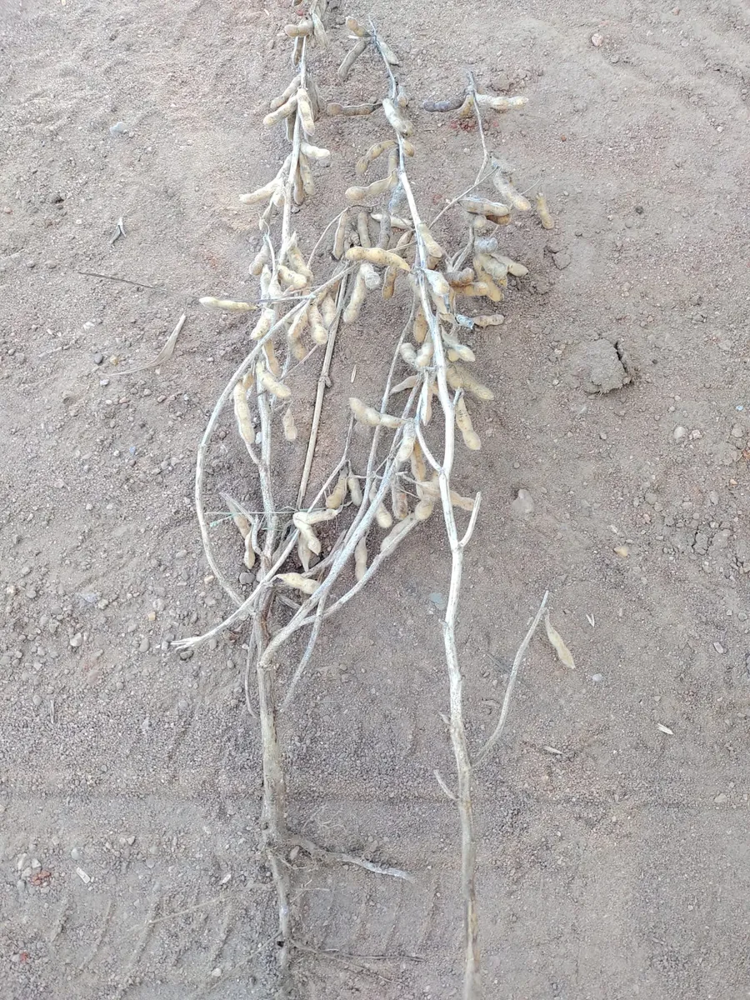
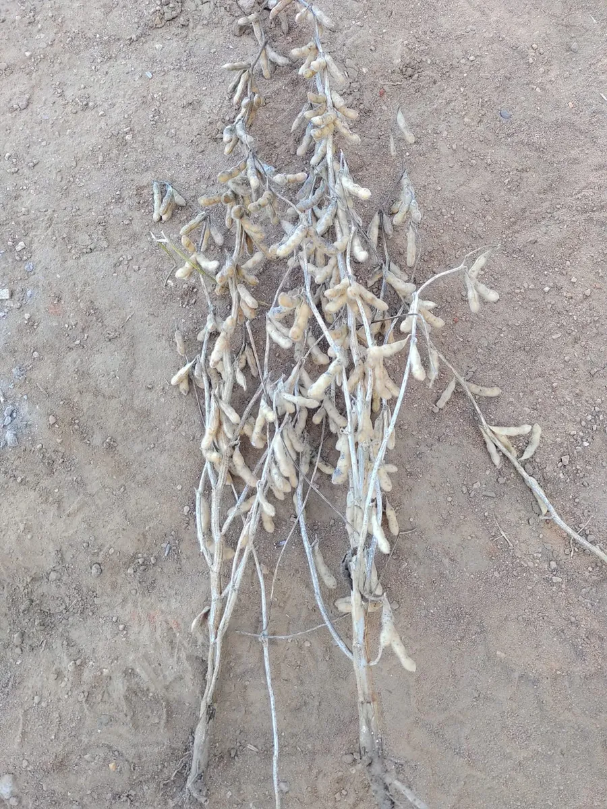

Relatório nº 1
Fazenda Santa Isabel
São Lourenço do Sul/RS · soja Don Mario 5958 IPRO · colheita em 20/04/2023


Diferença na colheita
9,28sacas a mais
por hectare
- Como foi feito
- 2 L de Cibus® Leg entre V4 e V6 e mais 2 L depois da florada.
- Como foi medido
- Carga pesada de cada área, com a umidade corrigida para 14%.
- Quem acompanhou
- A equipe da AgroCibus, na colheita. O relatório identifica o proprietário e o agrônomo da fazenda.